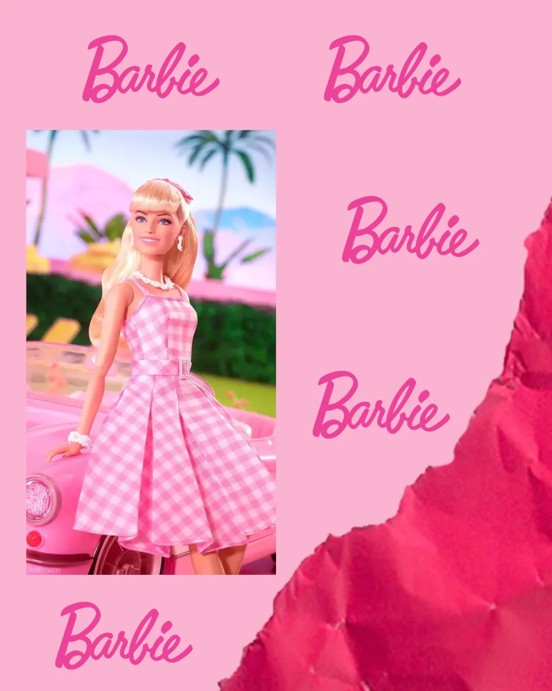
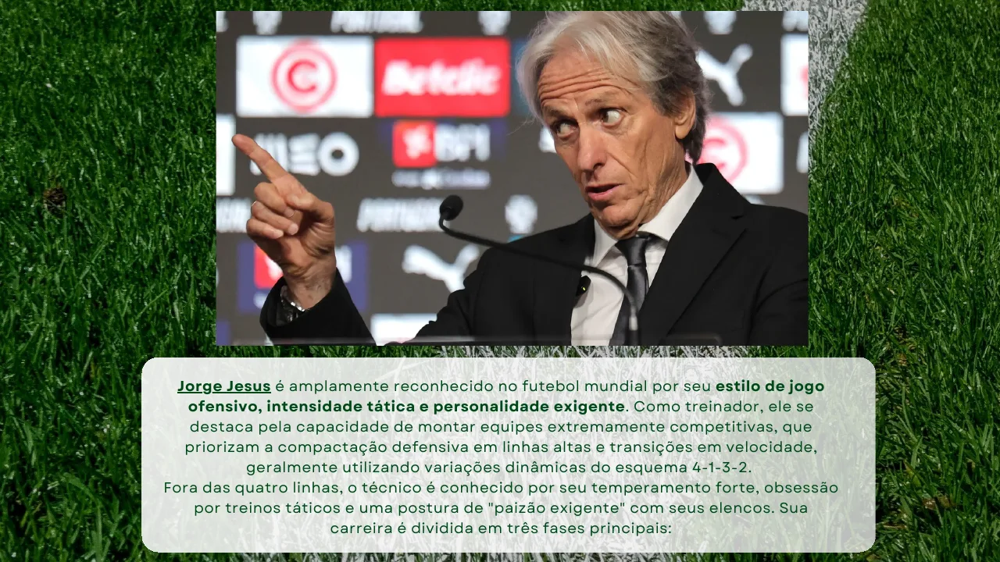
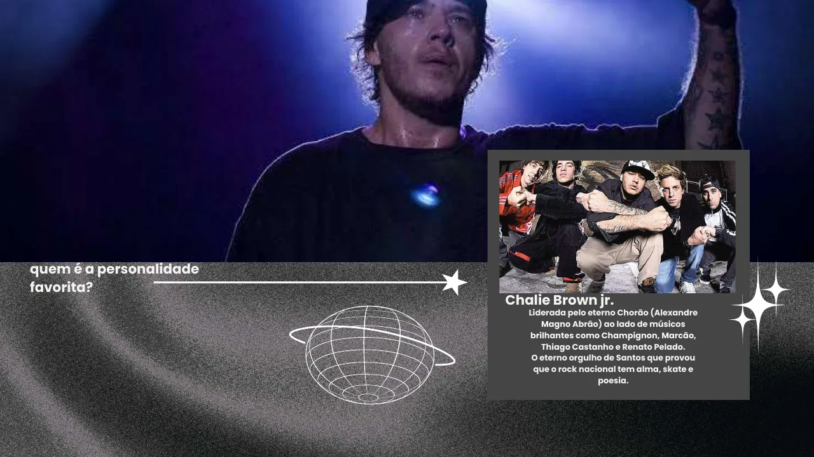

01 / ENSINO · DISCIPLINAS
Disciplinas.
Material de apoio, ferramentas e
referências de cada disciplina.
INFORMÁTICA APLICADA · 3ª AVALIAÇÃO
Trabalhos dos Alunos
Minha Personalidade Favorita
Disciplina: Informática Aplicada
Enunciado: Minha Personalidade Favorita
Votação
Os alunos deverão votar no melhor trabalho da turma por meio de uma enquete no SIGAA. O trabalho mais votado ganhará uma bonificação no grau final.
Trabalhos dos Alunos - 2026/02

Alessandra Alves Vieira · ZIP- Alice Victoria Duarte Pereira · MP4
- Amanda Soares da Silva · MP4
- Ana Beatriz Rocha de Souza · PDF
- Ana Clara da Silva Barbosa Melo · PDF
- Andressa Matos de Souza · MP4
- Beatriz de Souza Porpino · PDF
- Cintia Menezes da Silva · PDF
- Gabriel de Oliveira Costra de Jesus · PDF

Joav Victor Castro do Monte · PDF
Kamilly Victoria do Rosario Ribeiro · PDF- Paolla Rodrigues de Araujo · PDF
- Pedro Henrique Domingos dos Santos · PDF
← Voltar para Informática Aplicada